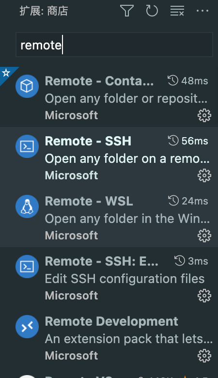
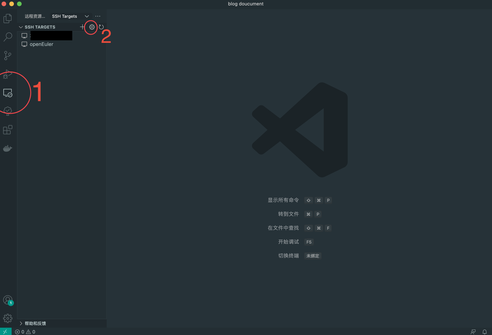
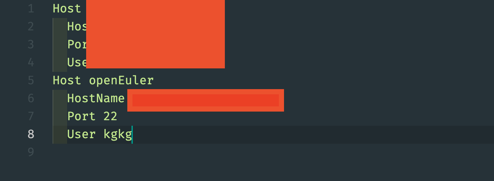
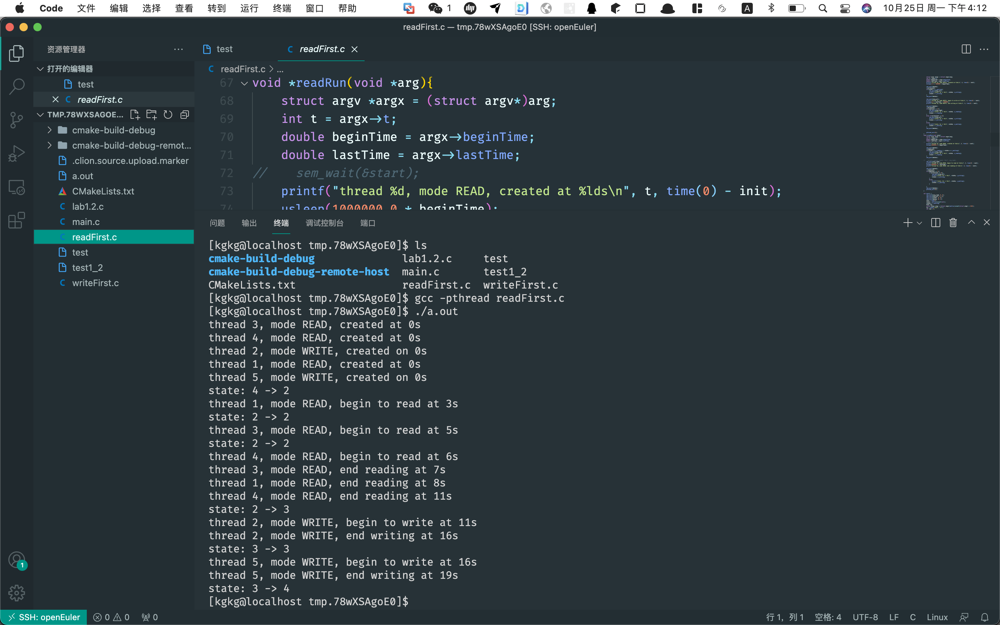

使用vscode搭建openeuler开发环境
折腾了一下午总算是配好了，虽然clion的配置更为无脑，但是可扩展性不高，但是vscode配置起来会有一些问题，我都折腾了整整一下午，总结下来以下流程，应该不会出现什么问题了。
安装vscode及插件
插件名称：remote-Development

配置内容


配置server端
配置ssh
进入root1
sudo su
使用vim配置sshd_config
1
vi /etc/ssh/sshd_config
设置以下选项
1
2
3AllowTcpForwarding yes
AllowAgentForwarding yes
GatewayPorts yes设置yum源
打开配置文件/etc/yum.repos.d/*.repo添加如下代码
1
2
3
4
5
6[osrepo]
name=osrepo
baseurl=http://repo.openeuler.org/openEuler-20.03-LTS-SP1/OS/x86_64/
enabled=1
gpgcheck=1
gpgkey=http://repo.openeuler.org/openEuler-20.03-LTS-SP1/OS/x86_64/RPM-GPG-KEY-openEuler安装tar包
1
dnf install tar
配置vscode
这个按自己需求配就好了
最终效果：
